Tout le cabinet dans une seule application.
La gestion, on s'en occupe : l'agenda, les dossiers, l'argent, le stock — tous reliés, donc rien ne se retape et rien ne se perd. À vous les patients.
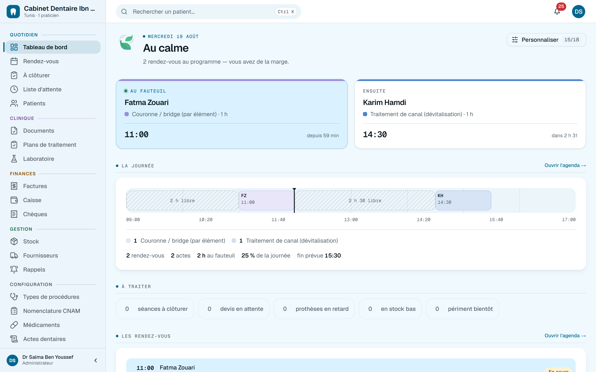
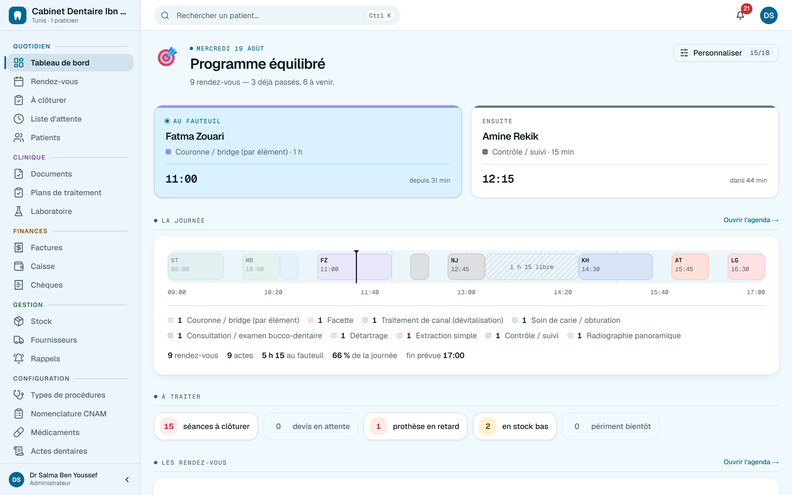
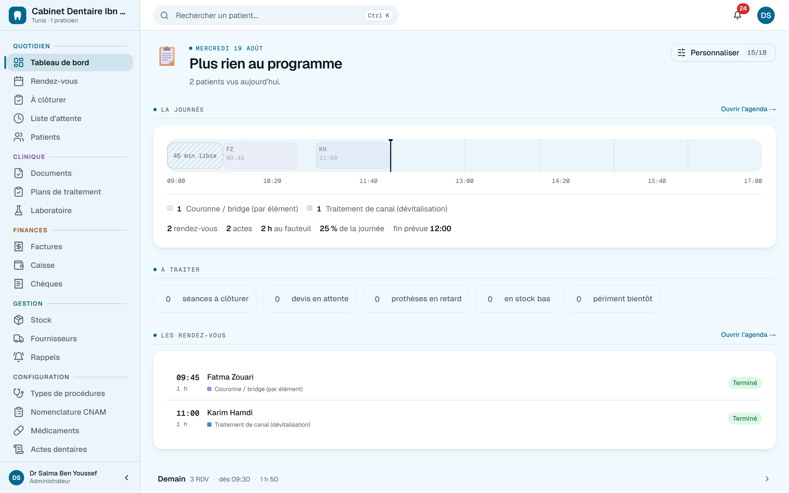
Le même écran, trois journées. Deux patients, et le tableau de bord se tait : ce qui est vide n'est pas affiché.
Neuf patients, une salle d'attente, quatre séances qui attendent une présence ou un encaissement — et le logiciel les remonte tout seul.
Rien ne dépasse. Quand la journée est finie, elle est finie : c'est la seule fois où le tableau de bord n'a rien à vous demander.
Une journée au cabinet
Du premier café à la dernière radio.
Six écrans, un seul geste de saisie : ce qui est noté au fauteuil se retrouve dans le devis, dans la caisse et dans le dossier, sans que personne le recopie.
L'agenda de la journéeQuotidien
Jamais deux patients sur le même créneau — la base elle-même refuse. Et le rappel est parti hier soir, sans que personne y pense.
Le patient qui arriveQuotidien
Trois lettres suffisent, avec ou sans accents. Et si la fiche existe déjà, le logiciel le dit avant d'en créer une deuxième.
Au fauteuilClinique
On clique la dent, on note l'acte. Le devis se remplit à partir de là, et le stock se déduit au passage.
Les relancesQuotidien
Le contrôle des six mois, la prothèse à réessayer, le devis accepté qu'on n'a jamais commencé. Le logiciel garde la liste, vous décrochez.
La fiche de soinsClinique
Les actes de la séance, et le montant payé qui devient une vraie note d'honoraires — donc de l'argent qui arrive vraiment à la caisse.
Le dossier completClinique
Radios, panoramiques, empreintes STL, PDF de laboratoire. Attachés au patient, renommables, et jamais dans un dossier « Mes documents ».
… et demain matin, une relance ramène le patient. La boucle repart.
À la fin du mois
Le mois se raconte seul.
Encaissé, facturé, dépensé, net. Le taux d'absence, les devis acceptés, les créances qui traînent, et la tendance sur six mois — comparés au mois d'avant. Personne n'a additionné quoi que ce soit.
Chiffres d'un cabinet de démonstration. Chaque figure est un lien : on clique, on tombe sur les lignes qui la composent.
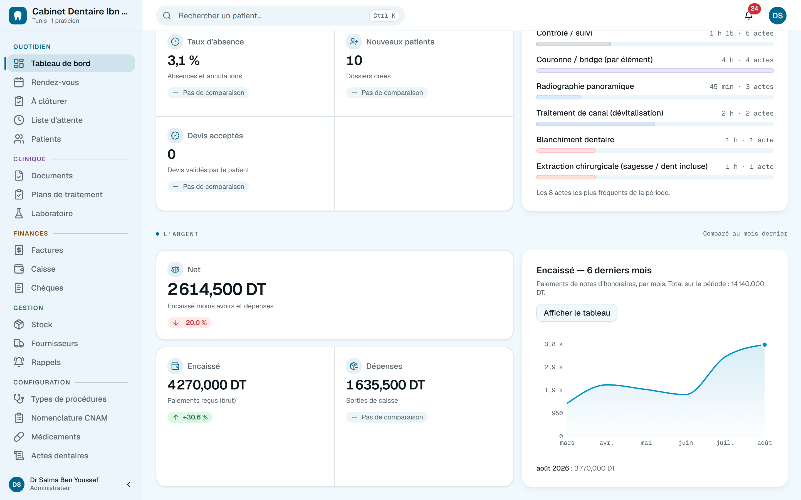
Le reste du cabinet
Et tout ce qu'on oublie de compter.
Ce ne sont pas les écrans qu'on montre dans une démo. Ce sont ceux qui manquent le jeudi à 17 h, quand la couronne n'est pas revenue du laboratoire.
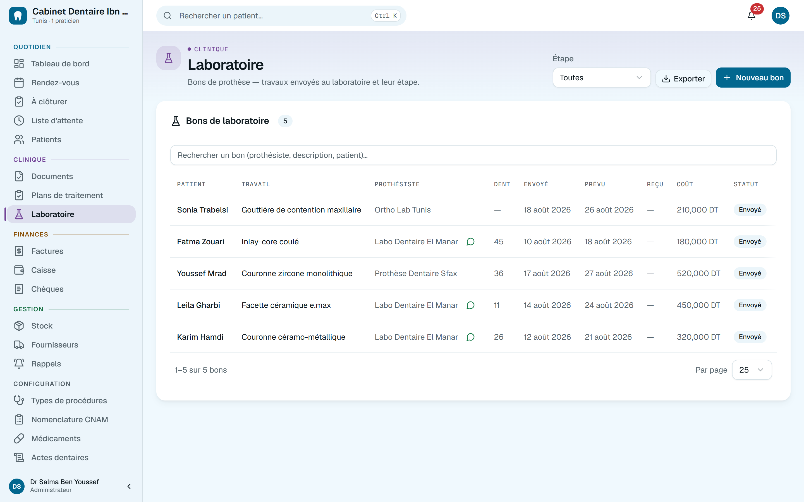
Laboratoire
Le bon de prothèse, son étape, sa date promise. Et un retard qui se voit avant que le patient le remarque.
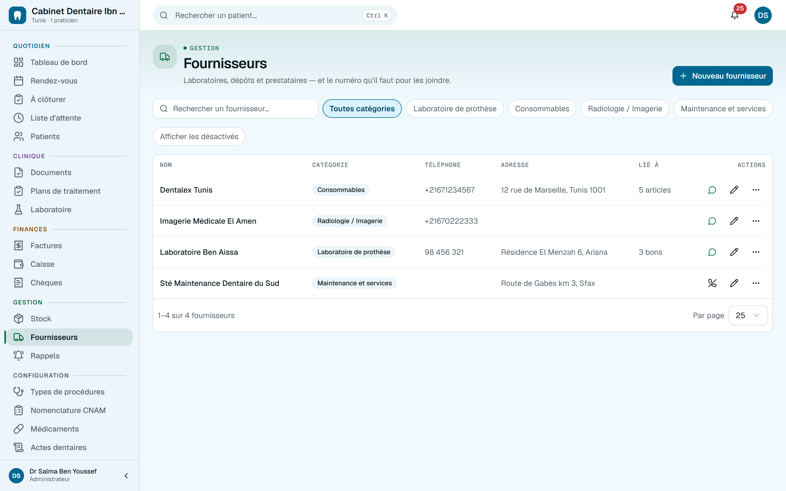
Fournisseurs
Un numéro derrière chaque nom, et WhatsApp en un geste — depuis l'alerte de stock elle-même.
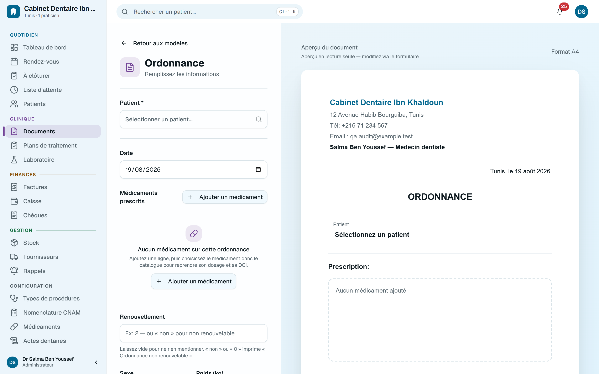
Documents
Ordonnance, certificat, devis, bulletin BS1 et arrêt de travail — imprimés sur le vrai formulaire, avec votre cachet.
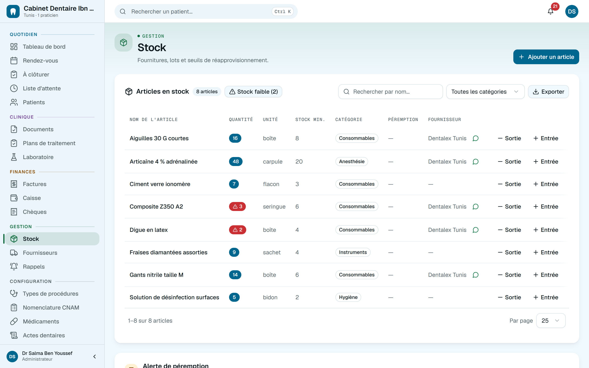
Stock
Ce qui manque, et ce qui périme bientôt. L'alerte tombe toute seule, même le jour où personne n'ouvre l'armoire.
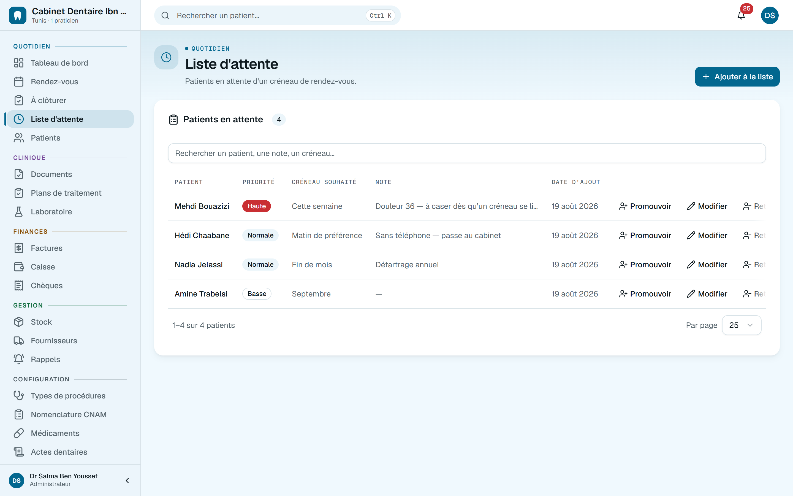
Salle d'attente
Qui est arrivé, qui attend, depuis combien de temps. Et le sans-rendez-vous promu en RDV quand un créneau se libère.
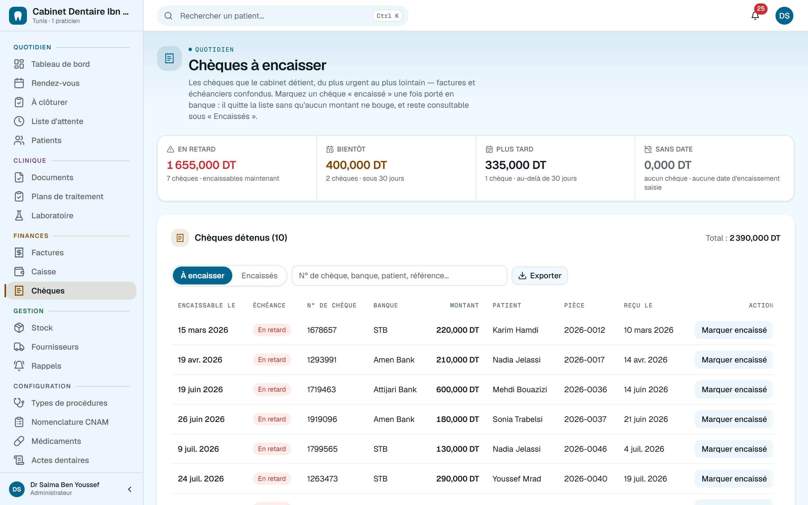
Chèques
Les postdatés, classés par échéance, avec leur numéro et leur banque. Ce que le total de la caisse ne dit pas.
La question qu'on pose en dernier
Et si je perdais tout ?
C'est la seule panne qu'on ne rattrape pas. Alors elle est traitée avant les autres.
Une sauvegarde par heure
Et relue juste après, pour vérifier qu'elle est vraiment lisible. Sept points de restauration, plus l'archive complète du cabinet quand vous voulez.
La coupure ADSL n'arrête rien
Installé sur le poste du cabinet, le logiciel sert tout votre réseau depuis votre propre disque. Ou hébergé, si vous préférez y accéder de chez vous.
Chaque modification a un auteur
La secrétaire encaisse sans voir les totaux du cabinet, et un paiement se corrige par un avoir motivé — jamais en effaçant.
L'inventaire
Quatre zones, vingt-quatre écrans.
Rangés comme on travaille : ce qu'on fait tous les jours, ce qui touche au patient, ce qui touche à l'argent, et ce qui fait tourner le cabinet.
Voir les vingt-quatre, un par un
Quotidien
- Tableau de bord — l'activité et l'argent, comparés au mois d'avant
- Agenda — jour, semaine, mois, séries récurrentes, sync Google
- À clôturer — venu ? soigné ? payé ? une question à la fois
- Salle d'attente — qui attend, depuis quand, promu en RDV
- Patients — recherche sans accents, import CSV, anti-doublon
- Rappels — SMS et WhatsApp, plusieurs paliers, jamais la nuit
Clinique
- Odontogramme — adulte, enfant, mixte ; diagnostics et actes
- Fiches de soins — actes, dents, montant, et la note qui en sort
- Plans de traitement — devis, échéancier, avenant après acceptation
- Documents — ordonnance, certificat, BS1, arrêt de travail P 061
- Laboratoire — bons de prothèse, étapes, retards
- Fichiers — radios, panoramiques, STL, DICOM, PDF
Finances
- Notes d'honoraires — timbre, TVA, numérotation sans trou
- Caisse — l'extrait ligne par ligne, pas seulement le total
- Par mode de paiement — espèces, chèque, carte, virement
- Chèques — postdatés, classés par échéance
- Créances — qui doit quoi, depuis quand
- CNAM — nomenclature, BS1, plafond annuel restant
Gestion
- Stock — seuils, péremptions, alertes automatiques
- Fournisseurs — un numéro derrière chaque nom, WhatsApp
- Utilisateurs — dentiste, secrétaire, admin ; chacun son périmètre
- Sauvegardes — toutes les heures, relues, restaurables
- Journal d'activité — qui a modifié quoi, et quand
- Réglages — horaires, actes, tarifs, cachet, en-tête
Dans la poche
L'application Android.
Le même dossier, le même agenda, la même caisse — et une notification quand un rendez-vous bouge. Pas encore sur Google Play : elle s'installe directement, en une minute.
- Depuis votre téléphone, touchez Télécharger pour Android. Chrome vous demandera de confirmer : c'est normal pour un fichier installé hors du Play Store.
- Ouvrez le fichier téléchargé, puis autorisez l'installation depuis cette source. Android ne le demande qu'une fois.
- Lancez Gestion Clinique et connectez-vous. Rien d'autre à configurer : le serveur est déjà renseigné.
Sur iPhone ? Il n'y a rien à télécharger : ouvrez front-7476.onrender.com dans Safari, touchez Partager puis Sur l'écran d'accueil. L'icône s'ajoute et l'application s'ouvre en plein écran, comme une application installée — sans passer par l'App Store.
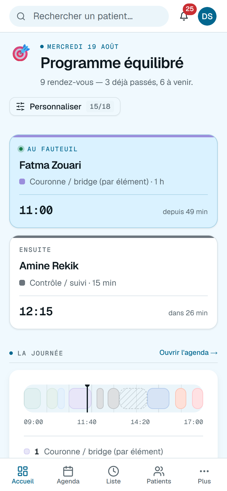
Demain matin, 08:00.
Trente jours pour voir si le cabinet respire mieux. Sans carte bancaire — et vos données repartent avec vous quand vous voulez.